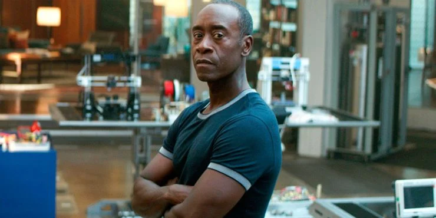

 Vhuthuhawe Negondeni is a student who was born in Shayandima who went to high school at Thohoyandou Secondary school located in Venda. He is currently studying towards a BIS in Information Systems majoring in internal auditing. His reason for studying it is so that he can become an Internal Auditor.
He likes playing Soccer
He likes jogging
Coding
| Modules Semester 1 | Modules Semester 2 |
|---|---|
| INF 214 | INF 225 |
| IAU 200 | INF 261 |
| BAC 200 | PUB 220 |